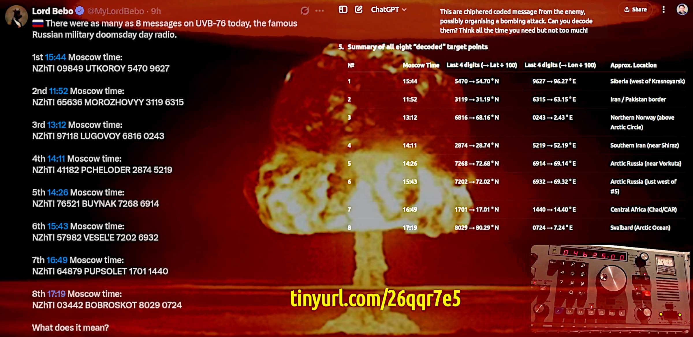
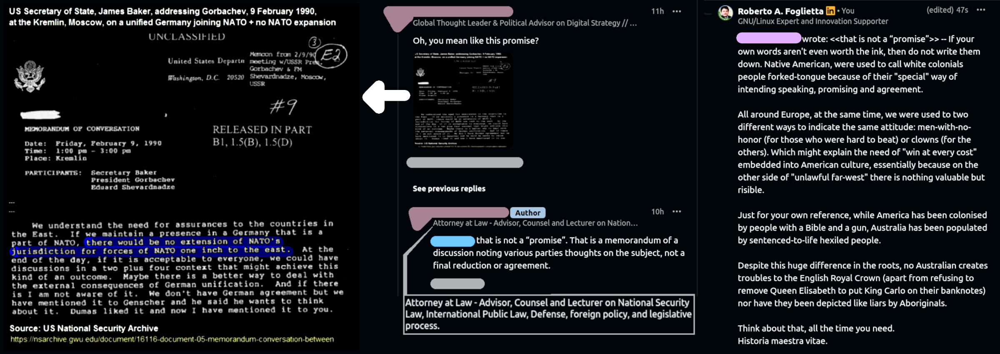

WW3 simply explained, for dummies
Why does NATO still exist, after 1992?
The war against Russia has been planned since 1992. In this period of time, the US war machine has cost about $33T of public debt, which is almost all of it. A strong claim and a bold conclusion which deserve an explanation. At the end of 1991, the Soviet Union suddenly collapsed. Suddenly because the Red Star Empire took relatively few years from when the Glasnost (transparency) started to be actively carried on. While Perestroika (changement) was the key point of Gorbačëv presidency (1985), the Glasnost remained behind on its schedule until the Chernobyl nuclear disaster (1986). That event forced the Soviet Communist Party to accept a breach into their opaque system of power. A breach that made the Soviet Union collapse, after all.ⓘ
The Minsk agreements are a pair of agreements aimed at ending the war in the Donbas region of Ukraine. The first agreement, Minsk I, was signed on September 5, 2014. The second agreement, Minsk II, was signed on February 12, 2015. Minsk I focused on a ceasefire and establishing a security zone along the border between Ukraine and Russia, with monitoring by the Organization for Security and Co-operation in Europe (OSCE). Minsk II built on this, outlining a package of measures for implementing the Minsk agreement.
Unfortunately, the Minsk agreements were not going to settle the Ukraine case, which at that time was allowed to join the European Union, but it was not ready for that due to their shortcomings in many fields like infrastructures, legislation, and financial and economic stability.
In fact, Ukraine, after having accepted to give back to Russia the nuclear weapons soon after the Soviet Union dissolution in December 1994, was consistently supported by Russia, which was paying relatively good fees for gas transfer to Europe passing through Ukraine and buying their public debts as much as they were in need.
Under these circumstances, the best role for Ukraine was to remain neutral and prosper in acting like a trading bridge between Russia and Europe. Like they did since 2007 and mainly since the end of 2021, when Ukraine hosted the vastest military exercise that NATO did at that time.
ⓘ
In late 2021, NATO conducted military exercises in and around Ukraine, alongside discussions about Ukraine's potential NATO membership and increased security cooperation. These exercises were part of a broader effort to strengthen Ukraine's defense capabilities and deter potential Russian aggression.
Which triggered, as expected, the Russian reaction that after several attempts to settle down the situation — the last failed because Biden forbade Zelensky the permission to sign an agreement with Russia — on the end of February 2022, Russian troops entered into the Ukrainian territory.
It is worth noting that Angela Merkel in late 2022, when it was clear that Russia could not be forced into a financial default nor it was possible to isolate Russia in that geopolitical scenario, spoke out about the US agreed to undergo with the Minsk I and II agreements just to prepare Ukraine for a war against Russia.
ⓘ
On 26 September 2022, a series of underwater explosions and consequent gas leaks occurred on 3 of 4 Nord Stream pipes, rendering them inoperable. The Nord Stream 1 (NS1) and Nord Stream 2 (NS2) are natural gas pipelines. They are two of 23 gas pipelines between Europe and Russia.
An event that was anticipated by Biden meeting in Berlin with Scholz in front of a quite surprised journalist team who were incapable to cope with the idea that a US president would have dared to destroy a strategic infrastructure co-owned by Germany, which is an ally, also in NATO.
ⓘ
On June 1, Ukraine launched drone attacks against strategic air bases across Russia. Ukrainian President Volodymyr Zelenskyy claimed that the strikes — dubbed Operation "Spider's Web" — damaged or destroyed 34% of Russia's strategic cruise missile-carrying bomber fleet. (report & analysis here)
Thus, nothing changed until Zelensky's best hit against Russia costed him the definitive loss of the war. Due to the fact that these weapons are either exposed instead of kept safely and hidden in hangars because of a global non-nuclear proliferation treaty. Which also implies that no country should leverage this exposition for attacking these infrastructures which are by the non-proliferation treaty doomed to disappear due to their aging. Which is a reasonably smooth way to free the world from self-mutual global nuclear destruction.
So far, with that attack, Ukraine violated one of the most universally respected treaties. Probably the only one and the last one that has always been universally respected on a global scale. Without any doubts because of a very good reason, after all.
At that point, every reasonable hope about the Ukraine war was lost. Thus Trump managed to force Zelenskyy to sign an agreement that is obligating — under certain specific circumstances — Ukraine to pay back the whole amount of financial support for the war against Russia. This is the point in which Europe became the US primary target, instead of Russia. While Russia, slowly but inevitably, is going to conquer the whole of Ukraine, as anticipated by Putin who claimed that Ukraine is part of Russia, de facto.
At this point, the proposal to surrender to Russia in exchange of the Lviv metropolitan area for the sake of Poland and give 10 years to Ukraine under Russian control to recover from the hate and mourning of the deaths in war — plus a necessary denazification of their culture and military troops — does not sound so much weird, anymore. Instead, something that would be inevitable and could happen in advance, sparing a lot of lives and suffering. With the granted advantage of bringing Lviv into a soon-to-join Europe condition.
NATO is waging a proxy-war with Russia
In a stunning admission, Donald Trump’s Ukraine envoy Keith Kellogg declared that NATO is in a proxy war with Russia, echoing long-standing claims made by Vladimir Putin.
It highlights that the conflict is happening in relation to or involving Russia, rather than simply being directed at Russia as a passive target. (Gemini)However, there is another explanation for having used "with" as a correct translation of revealing "involving" spoken by Keith Kellogg: Russia is involved in a proxy-war not against Russia, but with Russia, against Europe and in particular the European Union, and in particular the Euro which is the only fiat-currency that can compete with the US dollar for supporting international trades and a global financial reserve of liquidity.
People minds is the ultimate battlefield
The psychological warfare in the context of social media, something that NATO has called "virtual manipulation" while Oxford, more correctly, has defined it as "brain rotting" (2024-12-02).ⓘ
Ursula von der Leyen’s idea of exposing people to deliberately created fake-news to build resistance aligns closely with the concept of psychological inoculation or "pre-bunking". The idea is to expose people to simplified (aka meme) and deliberately misinformation to teach them how it works.
Unfortunately the pre-bunking approach can conversely be used to make the population more resistant to facts-driven fact-checking in favour of a propaganda-driven fact-checking as explained in this article liked below, in which a common person would not be able to argue but passively assimilate the biased notions provided by the AI, as an example of a propaganda-driven misinformation provider.
Squeezing the most from the fear of Russia
We can easily agree that the U.S. foreign policy was always been towards their own specific interests without any pity nor consideration for their allies. As clearly stated by the Wolfowitz doctrine (1992) which would be naive to ignore. We can also agree that the U.S. has a historical attitude to playing poker on many tables at the same time and quickly leaving those tables in which they are losing too much or in which the counterparty did not buy their bluff (aka their arbitrary narrative or deal-as-a-trap tactic). Considering these premises, how the table has turned in favor of Russia explained in the 2nd-last section and the facts interpretation proposed in the last section, we can agree that once the U.S. has taken the most from Ukraine and then left them behind as a problem for Russia, the next goal would be to leverage the Biden's era European leadership to squeeze the most from Europe. How? What's the best way to move from "against" to "with" Russia and send them an "you too involved" message by Keith Kellogg's words and by the "Times of India" columns in order to leverage the fear of a Soviet-like invasion of Europe? Nowadays, Russia is going to take Ukraine but who can grant us that they will stop there? Curiously, we as Europeans are keen to think that Russians are thinking like we do. If Russia would have left us to take Ukraine and include it into NATO, building up military bases and bio-weapons laboratories, who would have granted them that our next step would not have been attacking Russia? Like Ukraine did with European military support, as Kellogg admitted? Our worst nightmare is that others are like us, thinking like us and are going to behave like us. Which is not unfair, after all as Putin said: "they tried to strangle us, it is time to show them some kind of reciprocity. Does reciprocity sound very dangerous? Welcome aboard Game's Theory students! The fear of being invaded will let us be squeezed by an extra 3% of our GDP in buying weapons. When nations buy weapons in large quantities they should use them otherwise politicians should face the shame of having wasted a lot of public money. The sunk-cost fallacy, right? An evergreen. Starting a war to hide today's avoidable sunk-cost sounds like starting a WW3 to hide the US public and private debts. It is amazing how some people can think that we all are a bunch of idiots hopelessly keen to fall again and again into the same rat-traps just because it is presented with different words.Few but essential information about Americans
Starting a war to hide today's avoidable sunk-cost sounds like starting a WW3 to hide the US public and private debts.The usdebtclock.org on 25th June 2025, was accounting the U.S. public debt a little above $37T which compounded with private debt made a $104.7T figure. Let me put this number in a more human-centric perspective:
Ukraine war: money laundering and its default
It is difficult to say how many hundreds of billions the Ukraine war really sucks, relatively easier knowing the budget allocated. For sure, it has been the biggest waste of public money in the US and EU partnership history (aka NATO). No surprise that EU politics was loving this unnecessary and useless war, in which the two main drivers were:Israel vs Iran twelve days war
Despite the Israel vs Iran conflict being active for less than two weeks it brought uncertainty in that region at unprecedented levels. The Trump intervention in defending Israel and settling the dispute about the Iran nuclear war plan did not achieve transparency but wrapped the confusion around the US president.·NOTICE·
For the sake of clarity, in this article for "Israel" is always intended specifically the "State of Israel" — which at the time of writing is governed by the Netanyahu presidency — without contemplating any of the concepts behind it or any other way of intending it, including Israel as a nation.
When lies start a war, re-establishing the truth is the necessary step for peace (cit.)
In time of war the first victim is the truth (cit.)Well said but Israel vs Iran escalation did not show anything of that. The only great achievement of this escalation was to remove Zelensky from the war-as-a-show business. Under this PoV, while the Israel attack against Iran killed many Khomeini regime's top players, while the Iran attack which managed to pass through the Israel anti-missiles defence killed Zelensky as a star of the "rightful war against Russia". The definitive proof can be seen in military-to-civilian suite-change in King Carlo personal meeting photos. The other shocking news is about no-radiation-increase finding after the GBU-57 bombing. This is a very peculiar type of bomb and can be deployed only using B-2 Spirit bombers. Because of this, Trump to attack Iran nuclear facilities had to move some of them around the globe, because they were out-of-the-range. Iran got informed about this displacement, correctly identified it as the sign of an imminent attack and removed the most valuable stuff from the Fordow underground facility. Few days after the attack, the FBI opened an investigation because the preliminary military assessment had leaked. That classified file is claiming that Fordow nuclear facility has not been destroyed but Iran nuclear enrichment process has been delayed. The leak happened after Trump had claimed that the attack was an overwhelming success. So, the assessment has been renamed as "preliminary" that cannot reach any final conclusions, and the leak is an attempt to jeopardise the Trump credibility. Let me you notice that while Iran correctly managed to anticipate the USA strategic attack in two days and promptly reacted to it, on the other side of information machinery the U.S. president has to battle against the internal leaks of an assessment which would be supposed to provide him information not contrasting his public declarations. Obviously, Iran is confirming damages to the Fordow nuclear site because they know that saying anything different would imply to give solid proof and thus exposing highly sensitive information to the enemy. As long they are wrong, as long they are affected by an asymmetrical disadvantage. Moreover, Israel is mad about the Iran nuclear supposedly-war plan and might attack with tactical nuclear bombs because it is the only more powerful alternative to GBU-57 which failed to destroy the underground facility but just drilling holes. In fact, no terrain depression has been noticed but dust on the surface. (cfr. here)
ⓘ
2025-06-24 — US Navy warships are firing top ballistic missile interceptors at an 'alarming rate,' admiral says. Since last year, US warships have repeatedly fired SM-3 interceptors to defend Israel from Iranian missiles. These are assets the US would need in a high-end fight. The SM-3 missile comes in multiple variants, which can cost from $10M up to $30M, according to the MDA. In October 2024, Tehran launched more than 180 ballistic missiles at Israel. — Source: Business Insider
In these twelve days of escalation Iran achieved three strategically victories, beyond their own imagination, despite the key personnel loss they have suffered:
Israel vs Iran seen from Europe
About Israel
ⓘ
Israel maintains a policy of "nuclear ambiguity" (also known as "opacity"), meaning it neither confirms nor denies possessing nuclear weapons. However, there is substantial evidence from various sources suggesting that Israel has a nuclear arsenal.
Israel does not have any civilian nuclear power plants for electricity generation, but it does have nuclear research reactors—most notably the Dimona reactor, which is widely believed to produce plutonium for nuclear weapons.
Israel's nuclear research reactors are not all under the same level of IAEA scrutiny. The Dimona reactor is the key to Israel’s alleged nuclear weapons program, while Soreq operates under international oversight. Israel has never signed the Nuclear Non-Proliferation Treaty (NPT), so it is not obligated to open all facilities to inspections.
About Iran
ⓘ
Iran is a signatory to the Nuclear Non-Proliferation Treaty (NPT) and must allow IAEA inspections of declared nuclear facilities. The IAEA monitors enrichment levels (e.g., uranium enriched to 3.67%, 20%, and 60% under the 2015 JCPOA).
After the U.S. withdrew in 2018, Iran gradually breached JCPOA limits (now enriching uranium up to 60%, near weapons-grade). Iran stopped implementing the Additional Protocol in 2021 but still allows basic NPT-required inspections.
Or, more in general, this is the most classic example of the dual-standards policy evergreen. Which is nothing else than the result of the Wolfowitz doctrine, as long as someone could explain in a rational way how Israel contributes to the USA domestic interests. The idea that Iran can achieve the nuclear bomb and they are capable of mounting it over a rocket that can travel 2'600 km and hit at Mach 15, objectively is not a comforting idea. On the other hand, if a nation decides that having a nuclear bomb and the capability to effectively deploy it, is a must-have to be a relevant geopolitical player then we can agree the idea of "politics" and more in general "diplomacy" is rotten bad (cfr. diplomacy failure](#the-US-foreign-diplomacy-s-failure)).
They don't know what the f*ck they're doing
ⓘ
The only instances of nuclear weapons being used in combat were the atomic bombings of Hiroshima (August 6, 1945) and Nagasaki (August 9, 1945) during World War II.
Imagine that Israel would have dropped a nuke to Fordow surface — whatever it would achieved its underground structure destruction or more probably resulting in a great pyrotechnical show — that would break the implicit but unchallenged dogma for which nuclear weapons are forbidden as means for composing conflicts after the end of WW2.
Moreover, it would have been an attack carried on by a non-compliant IAEA and non-proliferation nuclear treaty state against another country which, instead, is still under those constraints within certain limits, at least. Moreover, without a direct existential threat not even as a response for a nuclear direct attack (reciprocity).
Which fully explains why Trump lost his temper over it.
Few but relevant information about Israel
The State of Israel has almost nothing to do with Jews, and for those who have some doubts about that, they should ask those Rabbis living in Israel protesting against Netanyahu policy about Gaza. Those Rabbis have been beaten by the Israel police because they were claiming that the Bible indicates that Jews have no right on that land after the destruction of the Solomon’s Temple (The Second Temple).ⓘ
Some anti-Zionist rabbis in Israel, such as those from Neturei Karta, protest against the Israeli government, citing religious texts that they interpret as forbidding Jewish sovereignty over the land until the Messiah comes. These groups often reference the destruction of the Second Temple (70 CE) as a divine punishment that suspended Jewish political control. However, this view is a minority position in Judaism, and most Israeli Jews—including religious Zionists—disagree.
Iran as nuclear threat for Israel
By the mainstream narrative, Iran's weaponry enrichment grade program is delayed by some months. Which is reasonable because even if the Fordow underground structure has not been damaged, an extensive check-out of it is required before moving back instruments and material to continue the operations. Unless another underground site has been prepared in these years and it can continue the operations without any sensitive delay. An hypothesis that cannot be excluded considering that Iran, after 2018, progressively limited the IAEA inspections. Unfortunately, reality can even be less comfortable than this. As China and Russia showed, non-Western countries suffering our prejudice in dealing with them like full autonomous and rightful geopolitical players decided to strongly embrace science and technological advancement as a way to emancipate themselves from our prejudice and moral judgmentalism. As China and Russia showed, obtaining pretty impressive results and Iran does not seem to have done differently. What can we expect from Iran, then? Nothing less than what we have recently seen from other non-Western countries which challenged and to some degree defeated what we can call "unchallenged dogmas" about science and engineering. Like using a special kind of steel instead of the expensive titanium for supersonic and hypersonic rockets. Or using fine grained carbon powder for producing high-quality steel at unprecedented fast-pace. Which is a news more facts-grounded than others like the steel-for-hypersonic-fligth. In creating nuclear warheads — as shown by the laboratory incidents during the Manhattan project, and soon later the end of WW2 — reaching the critical condition in which a neutron flow into the nuclear fuel can sustain itself or even exponentially increases, is not enough to create an explosion because the initial flare switches off itself due to the sharp thermal gradient that expand and change the geometry or rearrange the structure in a way in which the worst outcoming is the total melting of the core like in Chernobyl disaster. To create an explosion, relatively a lot of mass should be converted into energy before the heat dissipation creates such thermal and pressure gradients that put out of order the device that was supposed to make the core explode. Hence density, high-ratio of efficiency coefficient of neutrons rate increasing (above 1.5, at least) and extremely quick times are needed. In this scenario moderators, like water, or absorbers, U-238, are such stuff to move out from the core, as per universal dogma. Due to these unchallenged dogmas, the uranium isotope U-235 should be almost the only one allowed. The higher its concentration, the less is the mass required for making a critical explosive device. While using tightly synchronized concentric explosions to increase the density, even for a very short time, allows to drop weight from 64Kg (Little-Boy) to 10Kg circa. However U-238 is a competitive absorber because fast neutrons (> 1MeV) are the only way in which the explosion breeds itself creating more neutrons at each generation. In fact, the U-235 naturally emits fast neutrons within the 1MeV and 2MeV range with a symmetric distribution centered on the 1.5MeV emission peak. The cross section — hence the probability of a fission into a U-235 + N event — increases by 584 x 93% = 540 times, when a fast neutron slows down and becomes a thermal neutron. The neutron's moderation whole process takes 18-20 hits which is a too slow process for creating an explosion but fine for producing energy in a stable and controllable way like in the nuclear reactors, but kills any hope for "explosion". The loss of energy by a series of hits, among two objects which have nearly the same mass, follows the rule of 50% each hit. In fact, 1MeV / 2^20 = 1eV. So, in a nuclear explosion fast neutrons can be hit by a U-235 atom creating a fission and a neutron emission, or be absorbed by a U-238 atom or be reflected back by the deflector or get lost escaping from the system altogether.Conclusion
From the point of view of a person on the beach who stands up in front of the ocean, by their naked eyes the Earth can reasonably seem flat. Indeed, it is round. Therefore, what we put around goes around. Karma, isn't it?
NOTES AND FURTHER INFORMATION FOLLOWING
NOTES AND FURTHER INFORMATION COLLECTION
Kellogg declarations, press coverage
Un paio di retroscena a questa notizia
Certo che l’amministrazione Trump è bizzarra. Da una parte sembrano dei pazzi scellerati e dall’altra hanno guizzi "da bocca della verità".Ci sono due motivi per cui questo accade:
The drones attack to Russia nuclear facilities

ⓘ
Operation Spider's Web (Ukrainian: Операція «Павутина», romanized: Operatsija "Pavutyna") was a covert drone attack carried out by the Security Service of Ukraine (SBU) deep inside Russia on 1st June 2025, during the Russo-Ukrainian War. — Wikipedia
The coordinated strikes targeted the Russian Air Force's Long-Range Aviation assets at five air bases — Belaya, Dyagilevo, Ivanovo Severny, Olenya, and Ukrainka — using drones concealed in and launched from trucks on Russian territory.
The Internet connection is not the main key
A satellite link between the control center and the truck still seems to be the most plausible assumptionEverything else apart, a satellite link would have been tracked after-post. The movements among the cellular network of the SIMs (many for the same truck) and when many SIMs are moving together on a truck instead of an autobus (people), then some suspects start to arise. Many SIMs from many operators, one among them always connected, all together at the operation start which means the time for preparation before the launch. Many things can go wrong, so that solution can be a mere emergency backup while the satellite connection is the most effective and reliable. Plus, a satellite link for the Internet is not something unconceivable also for a stopped truck: pay-tv for those who are used to drive in many countries and VoIP/Whatsapp for friends and family. However, in principle, any commercial Internet satellite operator can be used. Even better, it could be prepared to use all of those available. After all, the Internet connection does not seem the main key, apart from the fact that it should be available and — when available — many connections on many operators can be bounded into a single VPN: faster, more opaque and more reliable.
Gotcha shitfigher
Gotcha, shitfighter. You have officially become a military target! (semcit.)Why do Ukraine drones have a 4K, hence fiber optic guidance? Even a poor model pilot (or old Flight Simulator pilot) can use instrumental flight and poor vision to navigate. But not the kids who get mad and do not enjoy the game when they use UAVs as if they were video games. This explains why the Ukrainian UAVs move like in video games instead of following the "hunting or scouting path". Someone that has been a real-word hunter or scout now. They are kids, paying kids for playing and only the best goes into real missions, the others financing the killing machine. Which also explains all this mad stuff in enjoyment of the video targeting the enemy. Because below the surface there is a dark network that earns $$$, kills, and educates to kill and enjoy the suffering of others. Nothing new, I met three ex KGBs with Polish ID cards but from Ukraine and they were exactly that way. Who knows where they have gone? Whatever about them, the same idea is spreading: first a large group of haters bullies the most brilliant and various many steps of hating kill by drones.
What's about war as business but not as usual?
Instead, another interesting "question" (or topic, more precisely) is about doing war as business, but not as usual. Not as usual for a few but fundamental reasons:The drones attack is terrorism-as-a-service
About the drone attack against military nuclear facilities, whatever happened to Russia, there are two huge critical risks to consider:The grooming gangs scandal in UK
ⓘ
15 giugno 2025 - Migliaia di ragazzine abusate da uomini pachistani: si apre l'inchiesta su uno dei peggiori scandali della Gran Bretagna. Il caso era venuto alla luce nel 2011, e si riferisce a episodi che risalgono fino ai primi anni duemila. Le autorità avevano chiuso un occhio per paura di apparire razzisti, ma ora Starmer ha dato il via libera a un’inchiesta pubblica per i ripetuti interventi di Elon Musk, che è partito gamba tesa contro le reticenze del governo britannico nell’affrontare lo scandalo. — Il Corriere
Venticinque anni di porcherie lasciate correre sottobanco anche dopo i risultati delle indagini del 2011 per sostenere un'idea assolutamente malata di politicamente corretto e integrazione culturale.
Se fosse una campagna di fango contro Stramer, allora è ben orchestrata e con una copertura di notizie pressoché globale, ma Stramer ha da perdere solo la reputazione mentre il sistema nel suo complesso, la dignità di ergersi ad autorità.
Quindi che il sistema attacchi Keir Starmer e come conseguenza di questo attacco ottenga la delegittimazione di se stesso come autorità, porta alla conclusione che il sistema è diretto da dementi, oppure marcio al punto da essere intollerabile anche per coloro che si nutrono di esso.
Money laundering and Ukraine default
As of April 2025, total assistance allocated by Europe to Ukraine stands at $157B, which is $26B more than the U.S., which has provided more military aid, instead.How much money are we talking about?
The AML events chain to the default
The difference between law and justice
It is always embarrassing when we need to remind a lawyer of the difference between law and justice. Especially because they are keen to interpret it as a procedural difference between legislation and its application.
Thanks God, the Ukraine proxy-war gives us a splendid opportunity to finally check their understanding about the difference, and let me briefly summarise a faw relevant aspects:
How misinformation leads to blind obey
Looking at this image, it is clear that even those who are not experts of military avionics can detect unrealistic details. It is silly to believe that Iran is trying to confuse Israel and Mossad with these images, doesn't it? Can pro-Iran or pro-Israel cheering people on social-media make any difference in a real world war? Why do those who spread these AI-generated images don't care that their images cannot last against a proper evaluation?
How to analyse OSINT war information
In times of war, information is precious but also at risk of being manufactured. Those that need to extract valuable conclusions from publicly available information have to follow the scientific method, within which making hypotheses and speculations are part of a strictly ruled way of doing. For example, in the case of the Fordow bombing, the absence of radioactivity leak and more than 3 meters of terrain depression on a large area it into a null-hypothesis: no damage. A delusional conclusion, despite the bombs doing their work perfectly and the hits were precise as they should have been.
The US foreign diplomacy's failure
Is it surprising? Not at all, because like in the far-west those who do not have a gun or are ready to use it in defending their own self-interests were at the mercy of the others. I think that native Americans confined to reserves can tell you about it in a pretty convincing way. So, the Iran crisis is nothing else than another chapter of the poker-face-as-diplomacy combined with winning-card-or-gun-duel as a universal negotiation strategy. Trump saying that Spain will pay double tariff because they did not sign for the military expenditure increase, is a pretty clear example of this posture. And again, it is not a Trump fault. On the opposite, thanks to Trump finally we see in plain view what was the US foreign posture since the Wolfowitz doctrine has been officially adopted (1992). Trump might wish to replace the doctrine but he would not succeed unless he clearly shows what the Wolfowitz idea is working in the real-world. We all need to expose how much wrong things are before asking others to accept to change them. False. Nobody requires an authorization to change wrong things, not even other people's acceptance. Within the above conceptual framework, anyone who has the power to do a change, they are automagically authorised. In a world of lies, doing is the most revolutionary of oddities. However, Trump is a US president and he still needs to create the proper conditions to defend his decision in front of the Congress and his nation.The worst democracy is better than the best dictatorship
It seems like a very nice idea, but it is not. In fact, this claim was considered false by those who invented democracy, the Ancient Greeks, and among them, Plato in particular. Ancient Greeks used to elect a tyrant for coping with hard times like war. How did they choose him? A savvy and intelligent man, who was more keen to solve the problem for which he got in power than procrastinate it to keep the power. Under this point of view, the dictatorship of idiots is the worst democracy, way worse than the Ancient Greeks'tyranny, which is the best kind of dictatorship that we know.ⓘ
Many forms of Government have been tried and will be tried in this world of sin and woe. No one pretends that democracy is perfect or all-wise. Indeed, it has been said that democracy is the worst form of Government except for all those other forms that have been tried from time to time.
Curiously, the author of the above citation is Winston Churchill, who expressed that concept at the House of Commons on November 11, 1947. Churchill became Prime Minister for the first time on May 10, 1940, leading the UK through most of World War II. He was defeated in the General Election of July 1945 by Clement Attlee's Labour Party, and thus ceased to be Prime Minister at that time.
ⓘ
Nassir Ghaemi's "A First-Rate Madness: Uncovering the Psychiatric Illnesses That Shaped History" (2011) is a prominent modern work that explicitly argues that mood disorders, particularly hypomania and depression, can contribute to effective leadership during times of crisis, and he uses Churchill as a prime example.
Ghaemi suggests that Churchill's depressive tendencies made him a political realist who understood the true threat of Hitler, while his hypomanic phases fueled his boundless energy and creativity in wartime.
It's widely acknowledged that Churchill consumed large amounts of alcohol (brandy, champagne, whisky) and smoked numerous cigars daily. He famously worked unconventional hours, often sleeping during the day and working through the night.
In modern times, the gossip about Churchill being chosen to lead the UK during WW2 despite being known to be addicted to various substances found its way when Nassir Ghaemi used his profile as the best example of a personality disorder that helps leadership in hard times. Anyway, immediately after the end of the war, Churchill was not the first choice anymore and when he managed to win a second term in 1951, he was seriously ill to the point that he had to resign a few years later.
So, who are those who put the fundamentals to support the idea that the worst of democracy is not better than every conceivable tyranny or dictatorship? Not many, but great minds:
ⓘ
Hanlon's Razor is a mental shortcut which teaches us, in the words of Robert J. Hanlon to never attribute to malice that which is adequately explained by stupidity. In other words, rather than questioning people's intentions, question their competence. A good advice, indeed.
Unfortunately, NATO did not change and in 10 years after 1992, they managed to put in power those who were the best manipulators available to defend their existence. Who are these people, so great mind manipulators? Pedophiles, but not those mentally-illed around schools. People who are also pedophyles (universal predators, more in general) because they were traumatised by abuse in their childhood and with a strong attitude of bending other people's minds (manipulation) in order to cause them suffering (sadism) not just kill, steal or be able to escape from justice.
War is the worst nightmare in terms of abuse, but by contrast, the ultimate "dream" for people who wish to perpetrate abuses because they are addicted to pathological forms of sadism. For example, the "grooming gangs" scandal, which is about covering the 2011 investigation which found out that the phenomenon was arising in the early 2000s. And this case is just the tip of this iceberg.
Dear Sancho (Panza), we are fighting against three giants: fear, ignorance and injustice. (meme)Unsurprisingly, this meme is suggesting that those who try to fight those three giants are hopelessly mad as Don Quixote attacking windmills. Well, let me clarify that fear, ignorance, and injustice have always existed, but nowadays we are facing the Native American prophecy (or a curse by their ancient god) about white people's attitude of rising to the power the evil people, to be led by them. Under our noses the last conspiracy theory is going to reveal a truth, but we cannot see it. Our eyes are useless when our minds are blind. Moreover, when our minds are driven by fear-ignorance-and-injustice, we are blindly seeking security, and those who created the problem are ready to cash in on our tax money and infiltrate civil society to provide more fine-grained control in the hope to achieve the ultimate power, ignoring that micromanagement destroys productivity in companies but it kills the human spirit when applied to society.
El sueño de la razón produce monstruos, cit. Francisco Goya y Lucientes (1746 – 1828)
Related articles
Share alike
© 2025, Roberto A. Foglietta <roberto.foglietta@gmail.com>, CC BY-NC-ND 4.0